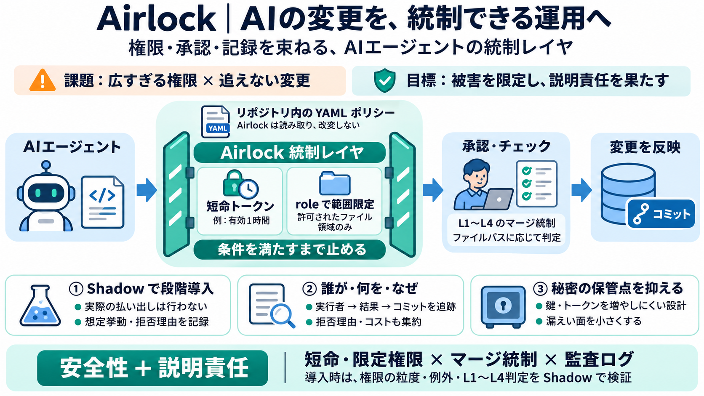

Show HN: Airlock – Policy-as-code for fleets of AI coding agents | Hacker News
points it would be: 1) Allows for the configuration of agent behaviors and life cycles under version control. Each agent…

points it would be: 1) Allows for the configuration of agent behaviors and life cycles under version control. Each agent…
Atlanta, GA—[August 4, 2026]—Airlock Digital, a leader in preventative endpoint security, today announced Agentic AI Con…
### Airlock Digital announces Agentic AI Control & Governance at Black Hat USA 2026 on Aug 4th '26, extending its preven…
# Airlock - Secure Access Hub ID: XF6E8oAs3PrE Website: www.airlock.com Legal name: Ergon Informatik AG Headquarters: Zu…
``` ╭─ airlock init ─────────────────────────────────────────────────────────╮ │ agents 1 models 1 prompts 2 │ │ tools 0…